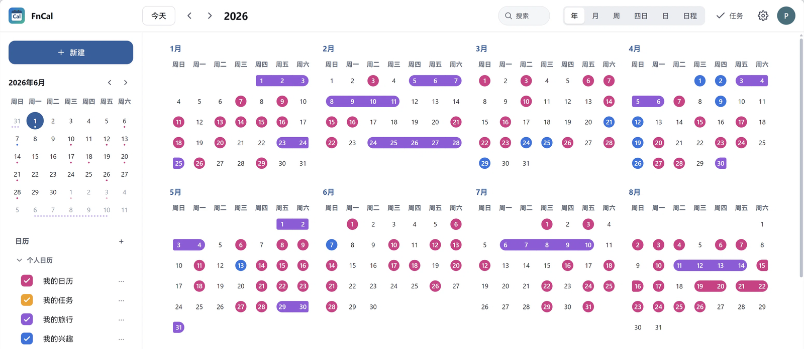

飞牛OS 应用 · 自托管日历 · v0.5.1
日历留在自己的 NAS 上
FnCal 是跑在飞牛 OS 上的日历应用，自带 CalDAV 服务：手机和电脑上的日历客户端直接读写同一批日程。AI 助手能帮你读、帮你记，但写进日历之前要先过你这一关。运行时不访问任何第三方云。
- 协议
- CalDAV · RFC 4791
- 数据
- 本机
/vol1/@appdata/ FnCal/ - 许可
- MIT
- 体积
- 708,184 B

AI assistant · MCP
让 AI 帮你排日程，
但决定权留在你手里
通过 MCP 把 FnCal 接进 AI 助手。它读得到的内容、改得动的范围、写完要不要你点头，全部由一个凭据决定。默认状态下 AI 写不进你的日历：它只会留下提案，等你在 FnCal 里点「接受」，或者把一条一次性审批链接发给你。
/a/… 链接发给你；打开就是提案列表，逐条或批量处理。- 提案 24 小时有效。过期后让 AI 重新发起，原提案不会自动执行。
- 审批链接 10 分钟有效，每条提案只能处理一次。全部处理完、到期、或 PIN 连错 5 次，链接失效。
- PIN 是可选的 4 位数字。给凭据设了 PIN，打开链接要先输；连续错 5 次这条链接作废。
- 链接不是接口。
/a/<一次性令牌>只返回一张 HTML 提案页，页面与链接里都没有 API 地址；服务端只存令牌哈希。 - 支持弹窗的客户端走弹窗。能力具备时在对话里弹出「批准 / 拒绝 / 取消」，不签发链接；两条路径都不接受 AI 替你做决定。
| 设置 | 可选值 | 作用 |
|---|---|---|
| 日历授权 | 不可见 / 只读 / 可写 | 不可见的日历对 AI 等同于不存在，连名字也看不到 |
| 时间窗 | 过去 N 天 / 未来 N 天，可不限 | 只读范围内的日程，超出范围的查询返回空 |
| 字段开关 | 标题、时间必给；地点、描述、参与者可选 | 连地点与参与人都可设为 AI 不可见 |
| 新建、修改 | 提案 / 直接通过 | 默认提案；直接通过等于把写入权交给 AI |
| 删除 | 提案 / 回收站 | 回收站模式下删除可恢复，保留期内可取回 |
客户端：凡支持自定义 MCP 的都能接，如 Claude Desktop、Cherry Studio。配置与令牌见 README；AI 技能包随 Release 附带，可在客户端里「立即更新」。
Why self-host
日历不需要
经过别人的服务器
把日程交给第三方，等于把每天几点出门、几点开会、去哪出差都交给一个你不控制的服务。FnCal 把这件事收回 NAS：数据落在自己的硬盘上，备份、迁移、删除都由你决定。
-
01
零云依赖
运行期不请求 puter.com 或任何第三方云；前端不引 CDN、字体与统计脚本。依赖与许可列在 THIRD_PARTY_NOTICES.md，可逐条审计。
-
02
标准协议，不是封闭格式
按 RFC 4791 实现 CalDAV，事件（VEVENT）与任务（VTODO）都能同步。导出是标准
.ics，时区、重复规则与提醒往返不丢；哪天不用 FnCal，数据照旧能带走。 -
03
AI 只能在授权范围内动作
每个凭据单独设置：能看到哪些日历、能看多远的时间窗、能读写哪些字段、写操作是「提案」还是「直接通过」。默认提案，改动要你点确认。
-
04
装在一台 NAS 上就完事
飞牛 OS 应用中心安装
.fpk，填端口和管理员密码即可用；也提供 Docker 镜像。没有外部账号、没有激活码、没有订阅。
Features
一个日历，六种看法
年、月、周、四天、日、日程六种视图，桌面与手机都能用；手机上每格最多两条文字加「+N」，点开是当日清单。
- 多日历
- 新建任意多个日历，各自颜色与描述；可单独隐藏、单独导出。「我的日历」与「任务」不可删除，可改名。
- 事件与任务
- 新建只分事件、任务两类。任务放在独立日历里，点顶部按钮在右侧栏查看全部任务；任务同样通过 CalDAV 以 VTODO 暴露。
- 重复与提醒
- 支持 RRULE 重复、全天事件、多时区；提醒可设默认值与全天默认值，导入导出往返不丢。
- 导入导出
- 导入
.ics可新建日历或并入已有日历；导出按日历单独进行，不放管理员菜单。 - 中国公共假日
- 只标中国法定节日当天，一个开关控制；不联网抓取，不显示调休与他国节日。
- 主题与设置
- 明暗跟随系统或手动指定，主题色可选预设或自定义；每周开始日、显示周数、时区都可调。设置页页脚显示当前版本号。
Install
装在自己的 NAS 上
飞牛 OS 用户走应用中心；其他环境用 Docker。装之前先核对包的 SHA-256。
- 下载安装包
从 Release 下载FnCal-0.5.1.fpk，先核对哈希再安装。 - 安装向导
填一个空闲端口（建议 1024 以上，避开 5232）与管理员用户名、密码；两步都必填。 - 打开
装完点桌面图标，浏览器新标签打开http://<NAS-IP>:<端口>/。桌面图标不会随端口修改自动更新，改端口后要手动改。 - 配 CalDAV 客户端
服务器地址填http://<NAS-IP>:<端口>/，用户名密码同登录；推荐在「安全设置 → 我的安全」建一个 CalDAV 专用密码。
# 先核对哈希（Linux / macOS） sha256sum FnCal-0.5.1.fpk # Windows PowerShell Get-FileHash .\FnCal-0.5.1.fpk -Algorithm SHA256 # 期望值 E0FC1E7A34389BCA1D84D65C74E9CF55B15DC74F5C7D58EDD08DF92DF0308995
Docker 部署见仓库 DOCKER.md；数据卷挂 /data，HTTPS 端口默认 5243。
FAQ
常见问题
数据存在哪里？需要联网吗？
存在 NAS 的用户数据目录（Docker 是 /data 卷）：账号、密钥、calendars/ 与日志。运行时不需要外网；AI 接入也是你的客户端去连 FnCal，不是 FnCal 去连外部服务。
支持哪些日历客户端？
凡按 RFC 4791 实现的客户端都可接入：DAVx5（安卓）、Thunderbird、eM Client 等。iOS / macOS 系统日历未做真机验收，行为以你实际测试为准。
AI 会自己改我的日程吗？
默认不会。凭据的「新建、修改」是「提案」时，AI 只能留下提案，需要你接受或通过一次性审批链接批准；只有把它设成「直接通过」，AI 才会直接写入。删除同理，可设成提案或进回收站。
怎么备份？
整目录备份应用数据目录即可（飞牛 OS 是 /vol1/@appdata/FnCal/，Docker 是 /data 卷；账号、密钥、日历与日志都在里面）；单本日历也可以用「导出」拿到标准 .ics。恢复时把目录放回原位重启。
能不能只给家人用、不开公网？
可以。把端口留在局域网内最省事；要远程访问就套 HTTPS 反向代理，并留意路由器的端口映射是否是你想要的暴露面。